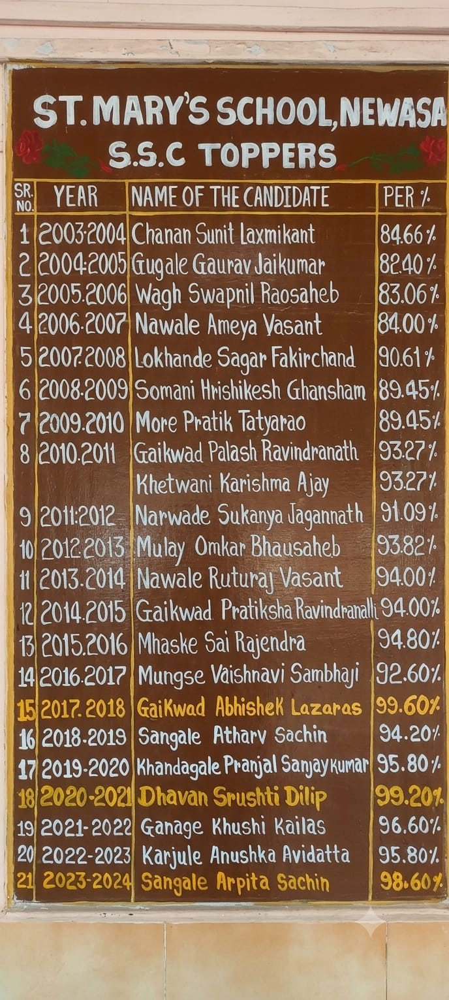
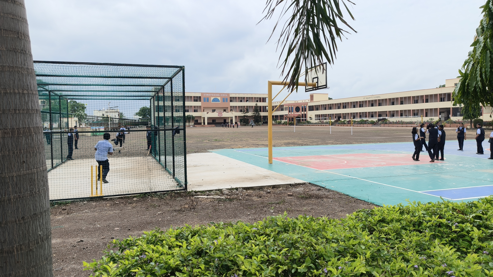
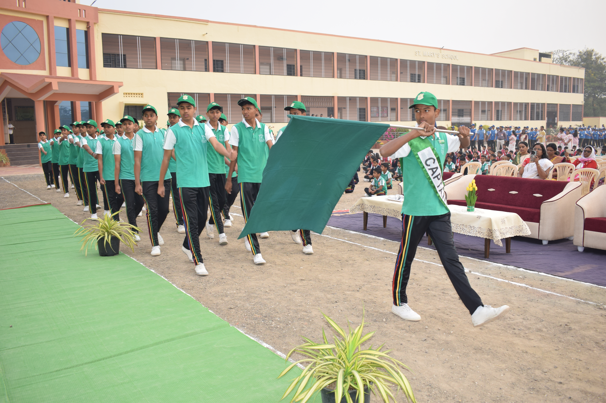
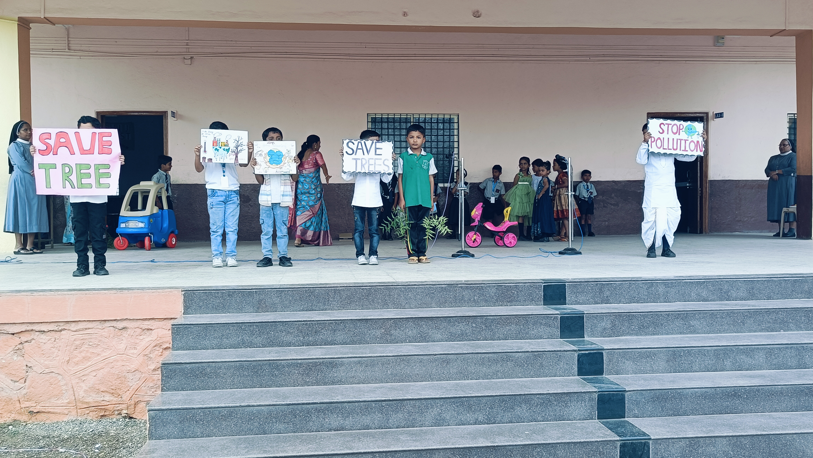

We are committed to providing quality education in a caring environment where students grow academically, morally, socially and spiritually.

St. Mary's School, Newasa is an English Medium Convent School managed by the Ursuline Sisters of Mary Immaculate.
Our mission is to educate young minds through academic excellence, moral values, discipline, compassion and holistic development.
We believe every child deserves opportunities to discover their talents and become responsible, confident citizens.
Read MoreOur institution is committed to nurturing students through faith, knowledge, discipline and service.
To provide quality education that develops responsible, compassionate and confident individuals ready to contribute positively to society.
To promote academic excellence together with moral values, leadership skills, discipline and holistic development.
"Let Your Light Shine"
Inspiring every student to become a beacon of knowledge, kindness
and service.
High-quality teaching focused on achieving the best academic outcomes.
Character formation through discipline, honesty, compassion and integrity.
Qualified and dedicated faculty guiding every student towards success.
Equal emphasis on academics, sports, leadership and cultural development.
Technology-enabled classrooms supporting innovative learning experiences.
A caring and secure campus where every student feels respected and valued.

St. Mary's School, Newasa has proudly maintained a 100% pass percentage in the SSC Board Examination for the past 22 consecutive years. This outstanding achievement reflects the dedication of our students, the commitment of our experienced teachers, and the continuous support of parents.
Every academic year, our students have consistently secured excellent results, with many achieving distinctions and scoring above 90%, bringing laurels to the school.
We are continuously working towards creating better facilities and learning spaces for our students.
 Under Construction
Under Construction
As part of our continued development, St. Mary's School is expanding its campus with a new multi-purpose building.
The upcoming facility will include a spacious Multi-Purpose Hall designed to provide a modern and comfortable space for school functions, cultural programmes, celebrations, assemblies and other important events.
This new facility is currently under construction and will be available for use upon completion.
Years of Excellence
Students
Qualified Teachers
Commitment to Excellence
We provide a safe, modern and student-friendly environment equipped with facilities that support academic excellence and overall development.

A well-stocked library encouraging reading habits and lifelong learning.

Modern computer laboratory with internet access for digital education.

Practical learning through well-equipped science laboratories.

Spacious playground promoting teamwork, fitness and sportsmanship.
Explore memorable moments from academics, celebrations, sports and school events.





St. Mary's School, Newasa, Ahilyanagar, Maharashtra.
(02427) 244622/8275441016
smsnewasa@rediffmail.com
Join St. Mary's School, Newasa and become part of a tradition of excellence, discipline and holistic education.
Apply for Admission